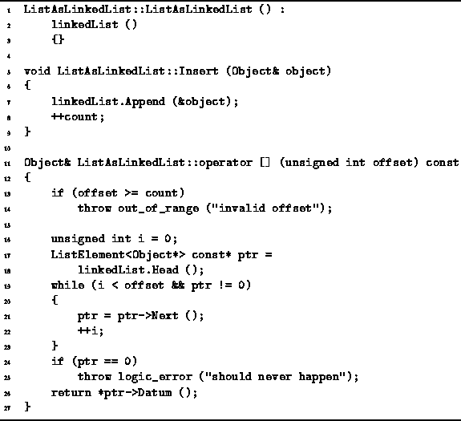
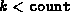
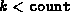

Data Structures and Algorithms
with Object-Oriented Design Patterns in C++
Data Structures and Algorithms
with Object-Oriented Design Patterns in C++
Program  gives the implementation of the Insert
member function of the ListAsLinkedList class.
This function takes a reference to an Object
which is to be added to the ordered list.
As in the case of the ArrayAsLinkedList class,
the object is added at the end of the ordered list.
This is done simply by calling the Append
function from the LinkedList<T> class.
gives the implementation of the Insert
member function of the ListAsLinkedList class.
This function takes a reference to an Object
which is to be added to the ordered list.
As in the case of the ArrayAsLinkedList class,
the object is added at the end of the ordered list.
This is done simply by calling the Append
function from the LinkedList<T> class.

Program: ListAsLinkedList Class Constructor, Insert Member Function and Subscripting Operator Definitions
The running time of the Insert function is determined
by that of Append.
In Chapter this was shown to be O(1).
The only other work done by the Insert function is to
add one to the count variable.
Consequently, the total running time for Insert is O(1).
Program also defines a subscripting operator,
operator[],
which takes an argument of type unsigned int.
This operator is used to access elements of the ordered list
by their position in the list.
In this case, the position is specified by a non-negative,
integer-valued subscript expression.
Since there is no way to access directly the  element of linked list,
the implementation of this function comprises a loop
which traverses the list to find the
element of linked list,
the implementation of this function comprises a loop
which traverses the list to find the  item.
The function returns a reference to the
item.
The function returns a reference to the  item,
provided .
Otherwise, k is not a valid subscript value
and the function throws an exception.
item,
provided .
Otherwise, k is not a valid subscript value
and the function throws an exception.
The running time of this operator[] depends
on the number of items in the list
and on the value of the subscript expression.
In the worst case,
the item sought is at the end of the ordered list.
Therefore, the worst-case running time of this algorithm,
assuming the subscript expression is valid,
is O(n), where  .
.
 Copyright © 1997 by Bruno R. Preiss, P.Eng. All rights reserved.
Copyright © 1997 by Bruno R. Preiss, P.Eng. All rights reserved.